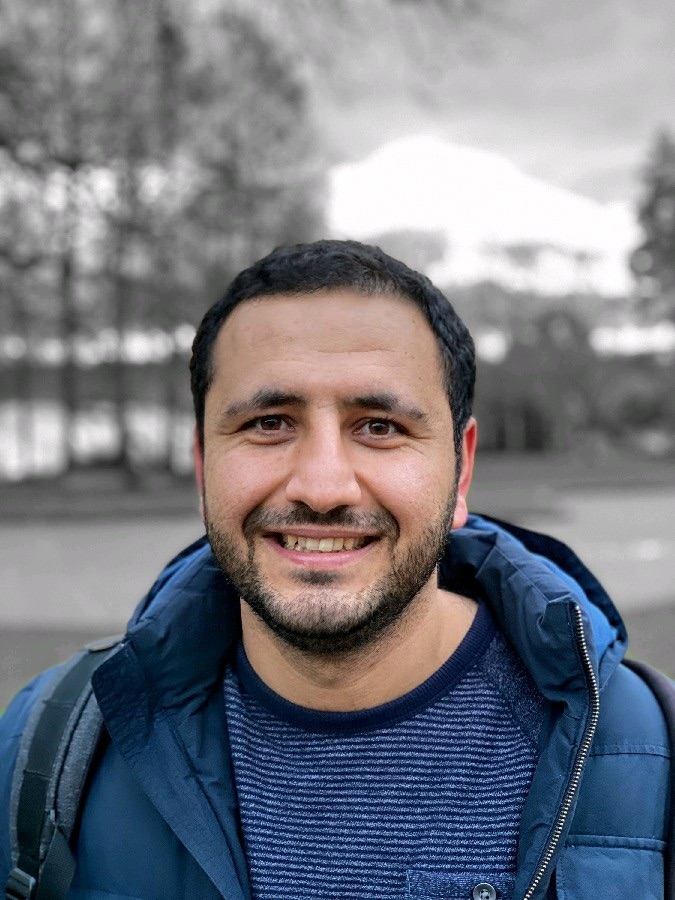

About

I am a Principal Scientist at Amazon AGI Labs with over a decade of experience designing, building, and leading production-grade AI/ML systems at scale.
I thrive at the intersection of technical depth and cross-functional leadership — mentoring engineering teams, contributing to open source (I authored Horovod’s horovodrun launcher and am a top-10 all-time contributor), and turning applied ML research into shipped systems, with 110 granted US patents and peer-reviewed publications (740+ citations, h-index 16) along the way.
I hold a Ph.D. in Computer Science from the University of Illinois Urbana-Champaign, where my research on the safety and security of cyber-physical systems won a Qualcomm Innovation Fellowship (2013, one of 8 winning teams from 138 proposals; finalist again in 2016). I earned my B.Sc. in Electrical Engineering at the University of Tehran (Outstanding Student Award, top 5%).
Exploring
What I’m thinking about right now:
- Models that own your data. How enterprises can truly make frontier models their own — continued pre-training on relational and structured data, where most enterprise knowledge actually lives.
- Continual learning as a product primitive. Models that keep acquiring new knowledge and capabilities without eroding what they already do well.
- Research → production. Closing the gap between frontier-model research and production reality, drawing on a decade of shipping ML systems in payments, ads, and infrastructure.
If you want to talk, reach out — the fastest way is email.
Experience
Amazon AGI Labs · Principal Scientist · 2025–present
- Leading model customization for frontier models — enabling customers to adapt foundation models to their domains.
- Continued pre-training (CPT) with relational datasets; continual learning without catastrophic forgetting.
Stripe · Staff ML Engineer, Risk · 2022–2025
- Merchant Credit Risk Tech Lead; reduced high-risk merchant losses while minimizing false positives.
- Architected DetectiveGPT, Stripe’s LLM agent framework for automated merchant risk investigations, adopted across Sales, Compliance, Crypto, and Strategy teams.
- Led ML models for delinquency, loss estimation, user value, and churn — $15M+/year in savings.
Pinterest · ML Engineer, Measurement · 2020–2022
- Conversion modeling Tech Lead; pioneered embedding-based candidate retrieval to future-proof attribution against browser privacy changes.
Uber AI · ML Engineer, Michelangelo · 2018–2020
- Founding member of Uber’s ML Application Framework (Keras/PyTorch workflows).
- Major Horovod contributor:
horovodrun CLI, fault-tolerant training, tensor fusion, Spark Estimators.
Capital One · ML Engineer · 2017–2018
- Deep learning data profiling and synthetic data generation (GANs/RNNs) — 110 granted US patents.
- First-generation deep learning experimentation infrastructure.
Earlier: internships at Affirm (early engineering hire) and Apple.
Contact
The fastest way to reach me is email: fardin.abdi@gmail.com
Seattle, WA · +1-857-294-3925